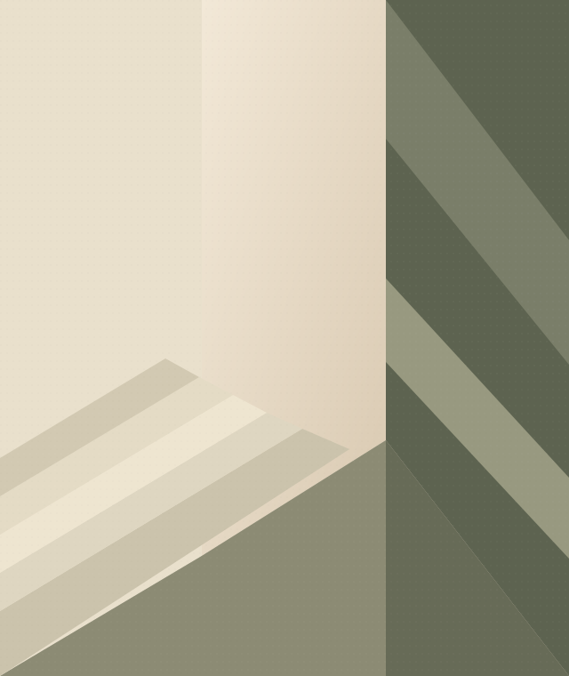

ONE CALL. A NEW CONNECTION.原型已运行 · 仍在改进
CURIOUS BY NATURE
保持好奇，
认真记录。
我是樾，一名喜欢动手做东西、也喜欢摄影的学生。
这里收集我的项目、观察，以及还在发生的探索。
A small collection of things I make & notice.
FIELDNOTES / 001光 · 声音 · 生活

给日常，多一点注视。摄影展位 · 作品待加入
MADE WITH CURIOSITY项目 / 摄影 / 观察
01 / THINGS I MAKE
把想法，变成能用的东西。
从一个真实的问题开始，
边做，边理解。
02 / THINGS I NOTICE
有些答案，在镜头外。
摄影是另一种观察。
慢一点，再看一眼。
试放你的照片仅在当前浏览器预览，不会上传；刷新后恢复展位。
这里留给我自己的照片。当前图形只是展位，不是摄影作品。
03 / THE PERSON BEHIND IT
你好，
我是樾。
喜欢把生活里的小问题，
变成值得动手试试的想法。
我现在是一名高中生。喜欢摄影，也对技术能怎样融入日常生活感到好奇。一个电话助手、一张照片，都是我理解世界的一种方式。
这个网站不是一份已经完成的答案，而是一份持续更新的记录。接下来，我想继续学习、尝试，把真正关心的事情做得更好。
动手探索摄影与观察保持好奇
还有很多想法，
等着慢慢发生。